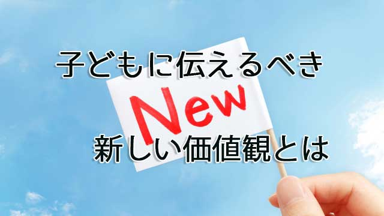

最近私はセミナーや講演会など子どもの教育について話す機会を頂いているが、そこで必ず話すことがある。
それは「今の時代求められる人物像」が明確に変わったということ。
これまでは何だカンダ言って、日本の社会では自分だけ突出せず「他人に同調すること」「与えられたことをその通りに従うこと」「自己主張しないこと」が奨励されていた。
つまり周囲の顔色を伺い、空気を読み上からの指示に従順で自らの考えを封殺して黙々と言われた通りに行動するという姿勢だ。この社会的要請は学校教育を通じて暗黙のルールとなり人々に課せられてきた。
しかし今や時代は完全に変わった。
上のような人間像と真逆のタイプが求められているのだ。
簡単に並べ立てるとこうなる。
「自分だけ突出しても良いから全体の利益を最大化できる。」「他者と協調と対立を繰り返して新たな価値を創造する」「既存の方法や伝統に縛られず状況に応じて最適を構築する」「説得力ある資料（証拠）に基づいて自己主張する」など。
これが今のそしてこれからも社会が求める人間像だ。
2020年からの大学入試の大幅かつ大胆な改革も、文科省によって既に導入が決定したアクティブラーニングの授業もこの路線に沿ったものだ。アクティブラーニング（以下AL型授業と言う）は小学校から高校まで既にカリキュラムに導入されているが、アクティブという名の示す通り「受け身に覚える」のではなく自ら積極的に問題を発見し、課題解決に取り組む人間を養成する新しい形態の授業法だ。
AL型授業については以前にも触れた（=ココ 「日本の未来はどうなる？迫りくる一大教育改革」2016年1月15日 ）が、教師が一方的に授業を行い生徒が受動的に覚えるのではなく、グループをつくって、一定の課題について議論したり、様々な資料にあたって自説の根拠を練り上げたりする。そして各々が独自の「見解」をつくりあげていくものだ。
ここで大事なのは「他人と同じ」ではなく、いかに「他人と違う見解」を創造できるかであり、その前提として「たった一つの正解」など世界には存在しないことを認識しているかどうかが問われる。
いずれにしてもALを通じて目指す人間像はこれまでのように「先生に言われたこと」「教科書に書いてあること」をオウム返しにする従順タイプの人間ではない。
オリジナリティあふれる自己主張型の人間の育成である。
優秀な生徒の定義が変わる
「そんな教育できるのか？」と言うなら「できる」が答えだ。
現に私は千葉県でAL型授業がもっとも進んでいると言われている学校で、この授業法の研修を行っているが若手教師を中心に、生徒主体の「活気に満ちた面白い授業」が展開されている。生徒の顔つきも変わってきた。積極的に発言をする子が増えてきたのである。
あと10年もすれば全国の学校に普及し、20年もすれば「優秀な生徒」の定義自体が変わるだろう。
先にも言ったように「社会的有用な人間像」は既に変わっているのだ。社会の方が先行している。
たとえば企業などでは、かつてのようにゼネラリスト（社内事情全般に広く浅く関わる者）よりも専門知識を持ちながら創造性も発揮する、いわば真のスペシャリストが望まれている。
これを子どもの勉強にあてはめるなら、全科目を平均的にコツコツやるより得意教科や興味のある分野で突出したほうが有利ということになる。
その代わり得意な領域に関してはトコトン深く追及する姿勢を持つこと。興味関心ある分野を見つけたらその周辺の知識まで広げて勉強する必要がある。教科書レベルでは浅すぎる。中高生であっても場合によっては大学レベルの専門知識に踏み込む。
要するにテストのための勉強よりも実践的な使える知識を身につけろという話になる。
難しそうに聞こえるが、AL型授業などで自主的に学ぶ楽しさが分かり、かつ興味ある分野を見つければ、子どもたちの意欲も喚起されるので「つらい勉強」とは感じないのだ。
結果的に大学入試にも有利になるだろう。
それでも親の中には今だに「5教科満遍なくやれ」とか「社会なんか覚えるだけ」などという人がいる。そういう人は「現実的に入試があるから仕方ない」「内申書が…」と判で押したように訴える。
現実的というなら、いま私が述べてきた教育界の変化こそが「現実」なのだから、子どもにどのような力をつけさせるべきかそれこそ現実的に考えて欲しい。
少なくともそれは「覚えるだけ」という受け身の姿勢ではないはずだ。
さらに親が子どもに示すべきは、アクティブになれというだけでなく、その背景にある社会が求めている「新しい価値観」についてだ。
ガラパゴス的価値観から脱する
冒頭で話したように今、社会が求める人間像が急激に変わりつつあるのは社会の価値観そのものが変化したからだ。
古い体質や価値観が音を立てて崩れ、新しいものが取って代わる。今はそんな時代なのだ。
もちろんいつの時代でも価値観の変化は見られるし、どの時代も「変革期だ」と言えないこともない。しかし今の「変化」は伝統的な日本的体質そのものの変更を迫られているという点で衝撃は大きい。当然ついて来られない人も出てくる。
変更を迫られているのは単に個人だけではない。企業や役所、団体などの組織や社会システム、道徳倫理観、公共マナーなどあらゆる領域に及んでいる。
そこで求められているものは、透明性であり開放性そして公正、自立、創造性などである。
私たちはこれまで「和を大切に」という名目の下、ともすれば集団に埋没し自らが属する組織や団体内の閉鎖的ルールに盲目的に従うことが多かった。個人の自由な発想より集団の暗黙のルールを優先する。そのあり方は他者の顔色を読み、「上」の意向を忖度し空気を読んで理不尽に耐えるという生き方にもつながっていた。
高度成長期までは、そんな集団主義的な行動パターンも有効だったが今はそうではない。
地球資源や環境問題は世界に共通するテーマであり、自国だけ自社だけの利益を追求する姿勢は通用しない。そこには透明で公正かつ厳格なルールが要求される。
また今は、規格大量生産時のように、ただ物をつくれば売れるという時代でもない。真に創造性ある価値観を生み出さなければ新たなニーズに応えることはできない。
さらにインターネットの普及などによって瞬時に情報が世界中に出回る時代に、理不尽なルールや不公正なやり方、閉鎖的な体質などは厳しく指弾される。
ブラック企業の問題、政治家への忖度、理不尽を課す組織や官庁の隠蔽工作。世間を騒がせているこれらの社会問題は、古い体質のままではもはや立ち行かないことの象徴である。言い換えれば「新しい価値観」を体現できない者への退場宣告である。
いま必要なのはたとえ多くの人と異なっても自分が正しいと思ったことを堂々と主張し、勇気をもって改革を実行する人間こそが社会に貢献できるという信念であり行動力である。
子どもに社会的に有用な人間になってもらいたいのなら、親はこのような新しい時代の価値観に基づいて育てなければならないと思っている。
ペーパーテストで良い点⇒良い学校⇒大企業⇒安泰
などという古い価値観で子育てするなら、残念ながらその親は時代の変化がまったく読めていないのだ。厳しい言い方だがその発想はガラパゴス的であり、子どもの将来を損なう可能性さえある。
子どもにやみくもに「勉強、勉強」と言う前に親のほうこそ現代社会の情勢や変化をきちんと見据えて欲しい。
その上で子どもに伝えるべきは、常識（世間のであれ属する組織のであれ）を疑うこと。自分の頭で考え正しいと思うことを実行する勇気をもつこと。心を開いて他者を差別せず正直に胸のうちを語ること。改革（変化）を恐れず常に前進し続けること。
そしてもっとも大切なこと。それは自分を敬い愛することだ。そうすれば自ずと道は開けるだろう。
なぜなら自己肯定感、自己受容なくしてアクティブに活動していくことはできないからだ。